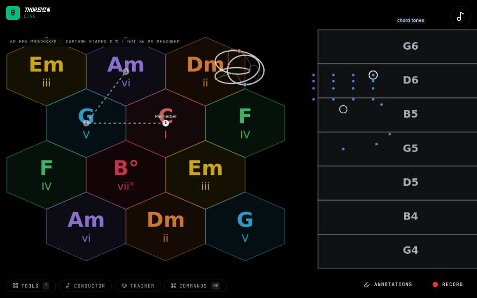
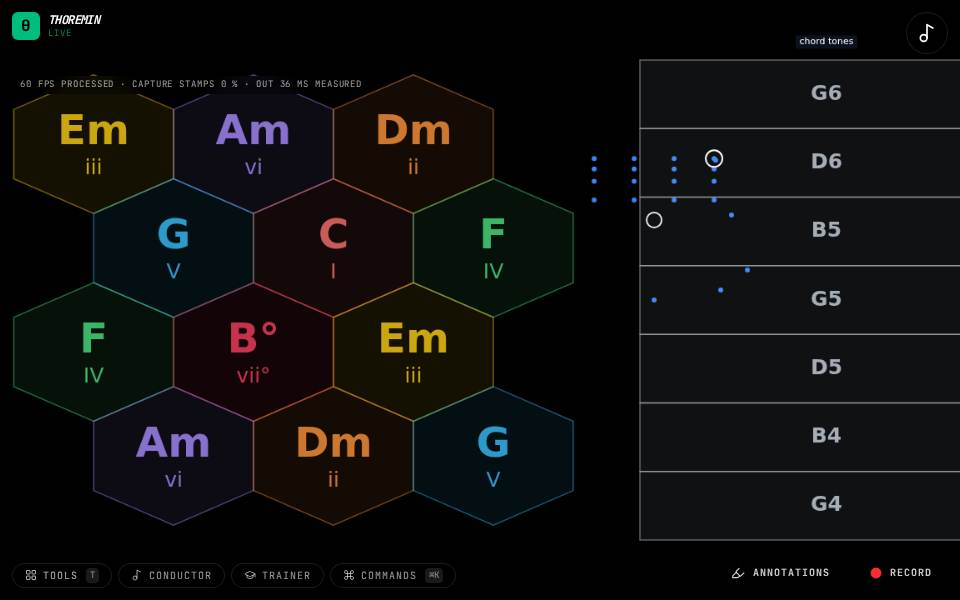
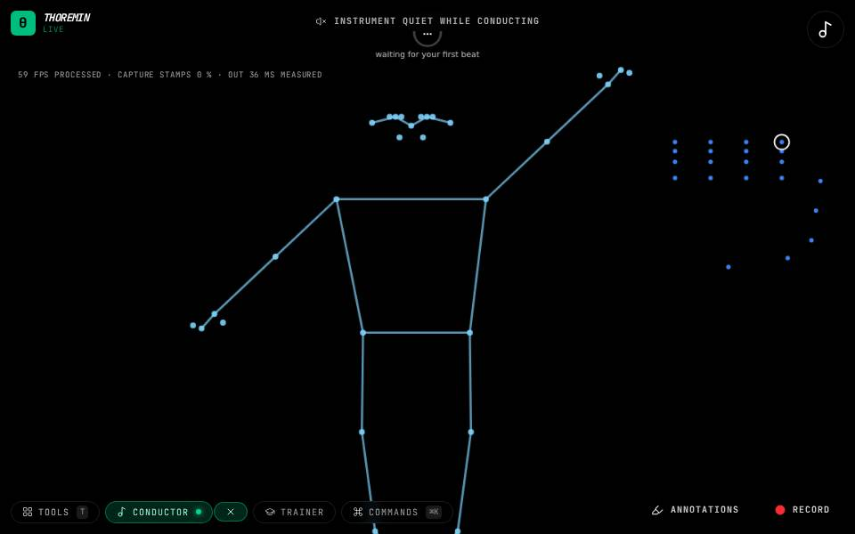
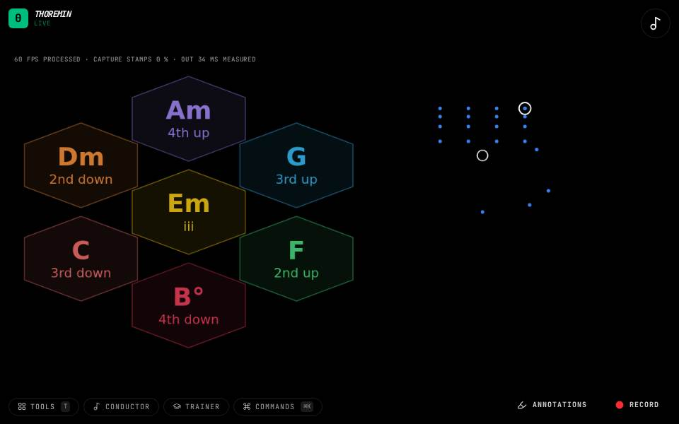

Chords and harmony
Point at chords instead of notes: a map or a wheel of a key's chords, a keyboard or a band that sets the chords for you to play over, a score whose chords you conduct.

Chord Map + Face
Point at a chord with your left hand, as on the Chord Map.

Chord Map Paths
Hold your left hand over C, the middle chord. A dashed trail shows the next chords of Pachelbel's Canon.

Chord Map Strum
Point at a chord with your left hand.

Chord Map
Hold your left hand over a chord on the map: that chord sounds and keeps sounding.

Chord Wheel
Hold your left hand in the middle of the wheel: that chord keeps sounding.

Conduct the Chords (Body)
Stand back so the camera sees you from the head to the hips; it loads a Haydn string quartet.

Conduct the Chords
Choose this instrument; it loads a Haydn string quartet.

Face Wheel
Look at the camera with a calm face.

Next-Chord Wheel
Hold a chord with your left hand.
Pentatonic Map
Point at a chord with your left hand.

Play Along (microphone)
Allow the microphone, then play a guitar, a piano, or a recording.

Play Along (MIDI)
Connect a MIDI keyboard (in Chrome or Edge) and play chords on it.

Tonnetz Wheel
Hold a chord with your left hand.

Wheel Walk
Hold your left hand on a chord.